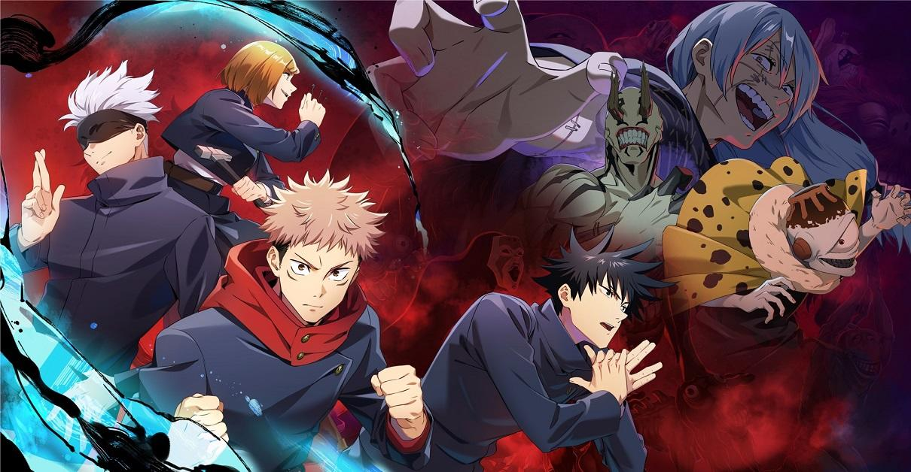

Trailer
Quick story
Jujutsu Kaisen follows the story of Yuji Itadori, a high school student who becomes involved in the world of curses after ingesting a powerful cursed object—the finger of Ryomen Sukuna, a legendary curse. As a result, he gains incredible strength but also becomes a target for other curses. To protect his friends and learn to control his new powers, Yuji joins the Tokyo Metropolitan Jujutsu Technical School, where he trains alongside skilled sorcerers like Megumi Fushiguro and Nobara Kugisaki. The series explores themes of friendship, sacrifice, and the battle against malevolent forces, all while delivering thrilling action and dark humor.